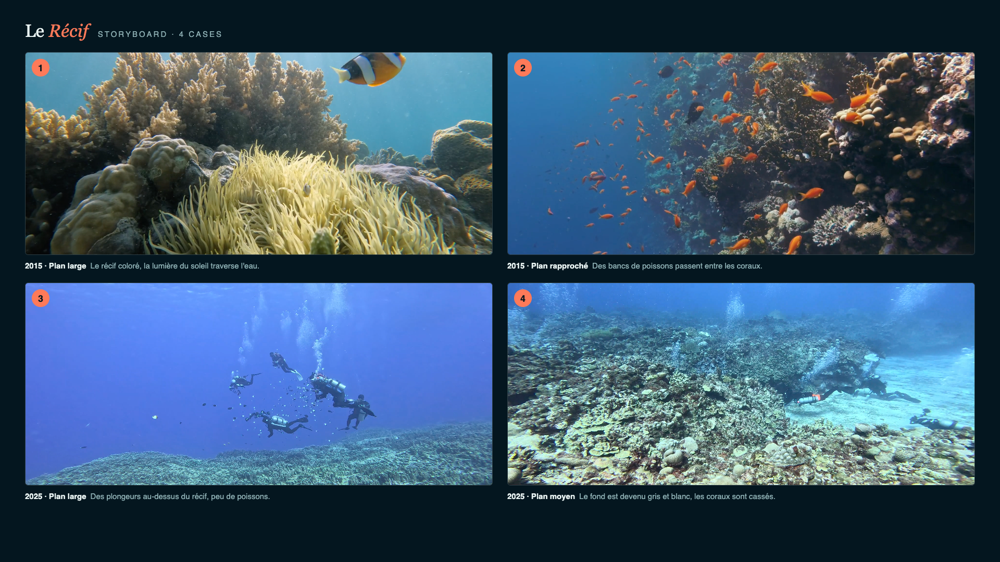

01
Scénario
Sur un même récif, deux plongées à dix ans d'écart.
- 2015Le corail est rouge, jaune, vivant ; les poissons sont partout, une raie manta plane au-dessus du récif.
- FonduL'image plonge dans le noir.
- 2025Le même récif, blanc, cassé, silencieux. Presque plus rien ne bouge.
- Une plongeuse pose la main sur une branche de corail morte.
- Elle sort un fragment de corail vivant et le fixe sur la roche : une bouture.
- Dernier plan : un petit poisson revient s'y cacher. Un début.
Note d'intention. Le film ne montre pas une catastrophe spectaculaire, il montre un silence. Le fondu au noir entre 2015 et 2025 fait ressentir en une seconde ce que dix ans de réchauffement ont fait au récif. La fin reste ouverte : la restauration existe, et elle commence par un geste.
02
Storyboard

Storyboard en cours d'intégration
- 12015 · Plan largeRécif coloré, raie manta, banc de poissons.
- 22025 · Même cadrageCorail blanchi et cassé, eau vide.
- 3Gros planLa main de la plongeuse sur le corail mort.
- 4Plan rapprochéLa bouture fixée sur la roche, un poisson revient.
03
Extrait
Extrait en cours d'export